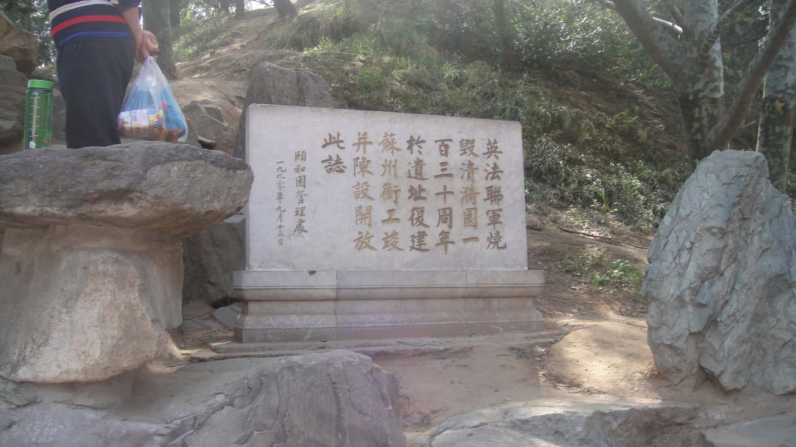
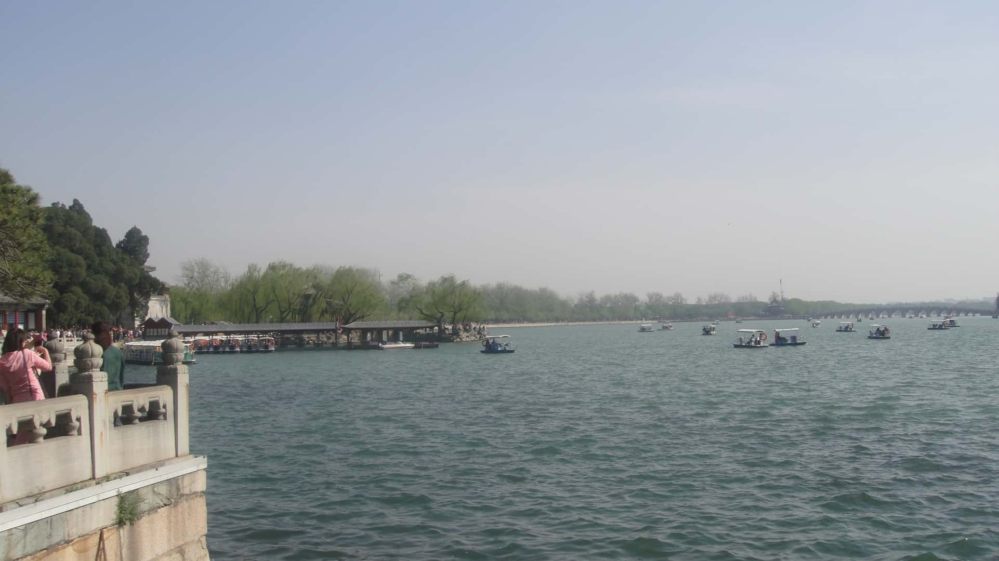
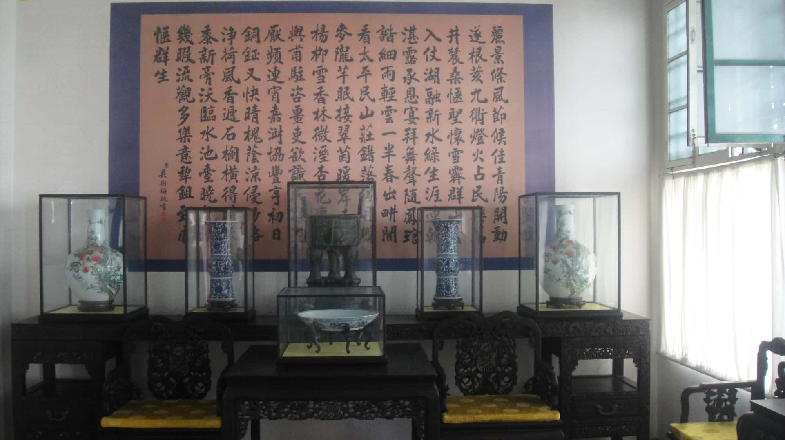
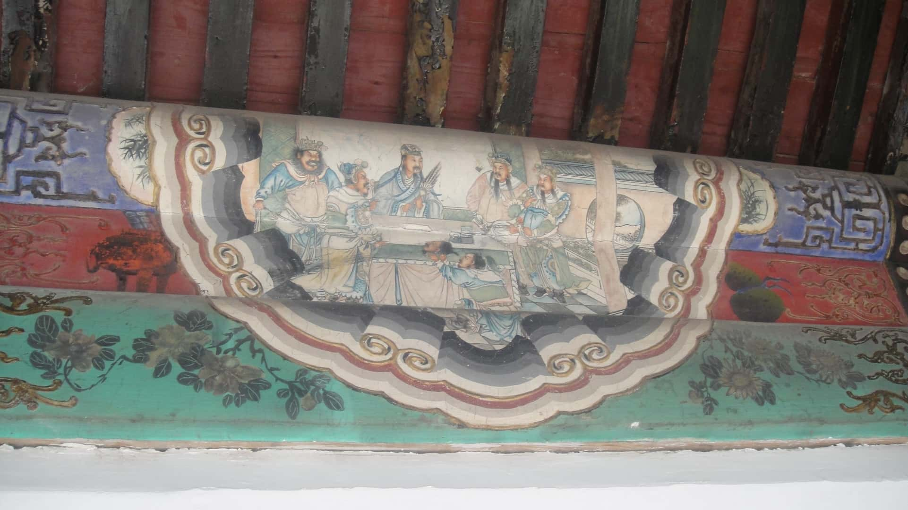
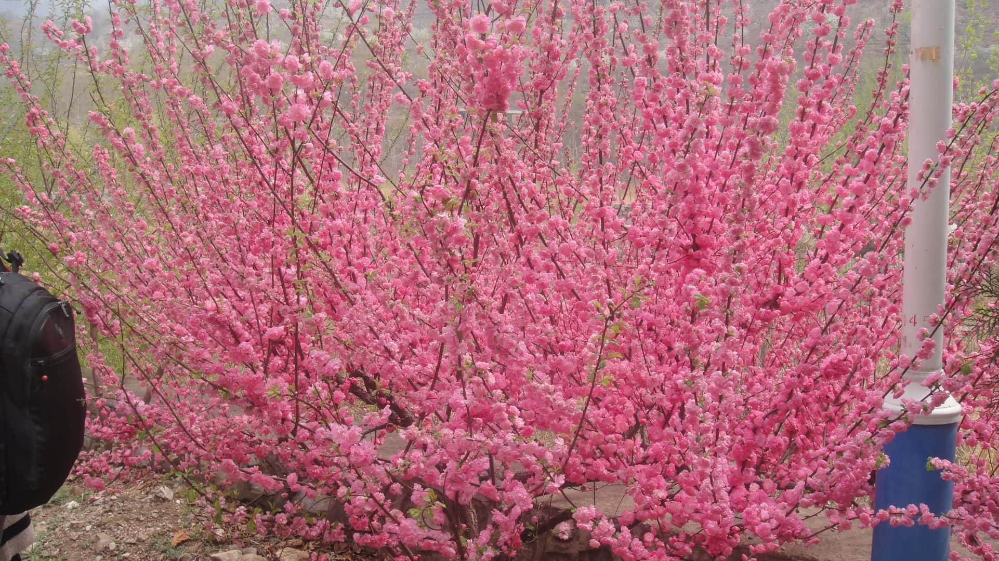
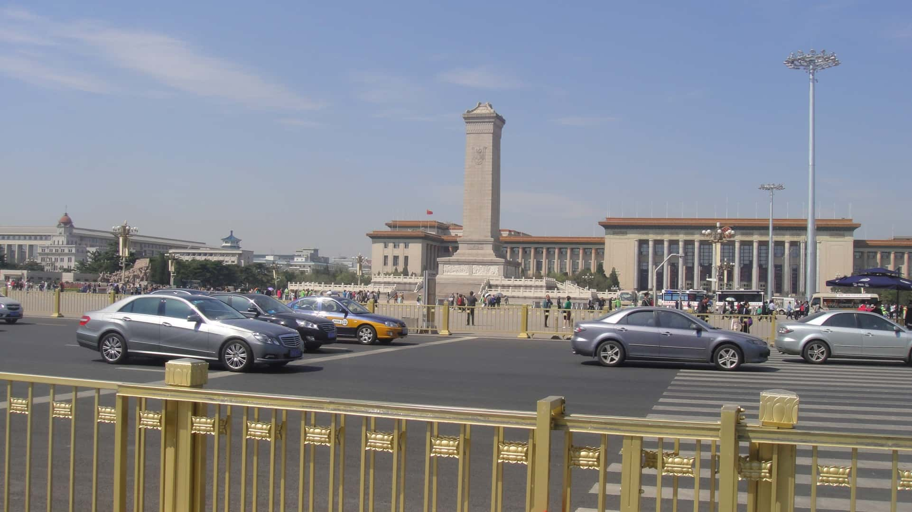
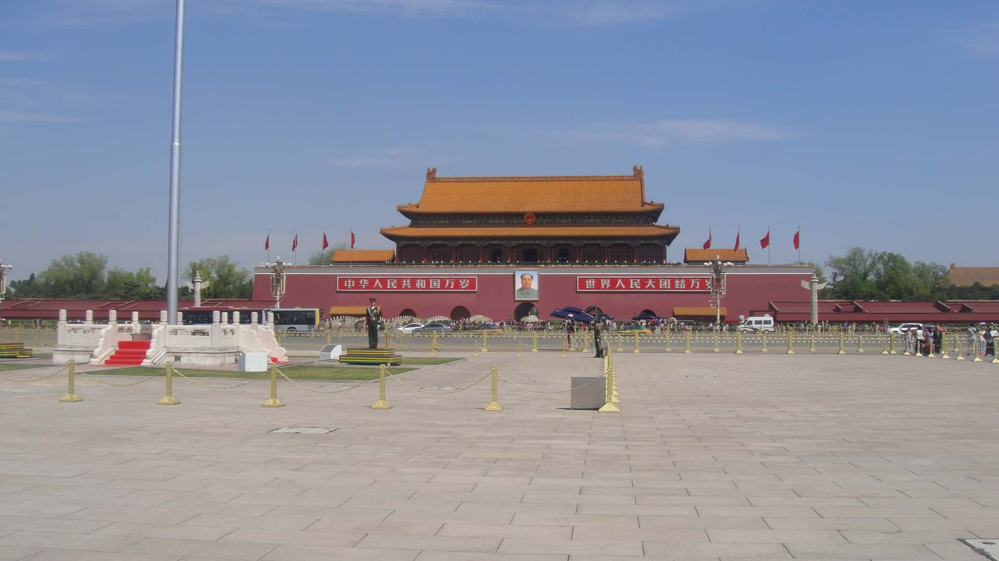

20150415北京游记
2015年4月15日小生第一次来北京，作为中国人，首次来到首都，还是有点小兴奋的~~
这次北京之行说来也挺意外，在和北京总部的领导交谈中说到自己还没到过北京，北京领导就邀约我到北京一游，说走就走。
往返是绿皮火车，坐了两天一夜，怎么说呢，真的是睡不好，早上起来也不方便整理头发，形象分大减。
美食嘛，就是各种吃吃，有正宗的北京炸酱面，里面有很多黄瓜，其实吃不习惯。
最好吃的之一，应该是驴肉，很鲜美！有各种做法：驴肉火烧、驴肉火锅等等，还吃了羊蝎子、全聚德烤鸭等等。
北京是真的大，地铁交通非常发达，有十几条线吧，往返两头能达两三个小时以上。
浏览了很多地方：天安门、香山公园、各种王府、各种园林等等等，还和北京领导驱车去了古长城。
几天时间，其实很匆忙，很多地方是走马观花，一带而过，还有不少地方没能浏览。
好吧，就留点遗憾下次再来吧！
那么北京还有哪些地方值得游玩呢？小生在此留个备忘，希望将来再约~
自然风景类的景点有：
颐和园：作为中国古代皇家园林之一，颐和园以其湖光山色、古典建筑和丰富的文化底蕴而著名。这里有广阔的昆明湖、雄伟的长廊以及充满历史感的佛香阁等景点。适合悠闲漫步，感受自然景色与古老文化的结合。
香山公园：香山位于北京市西北部，是一个以红叶和秋景闻名的地方，特别是秋天，山上的红叶如火如荼。香山的自然风光和历史遗迹相结合，让人感受到宁静与历史的交织。
十三陵：这里是明朝皇帝的陵寝群，除了宏伟的陵墓建筑，周围的山脉和自然景色也让这个地方充满了历史的厚重感和自然的幽美。
北京植物园：这个植物园面积广阔，是欣赏各类植物、鸟类和自然风光的好地方。园内有丰富的植被和宁静的湖泊，是人们放松身心、享受自然的好去处。
奥林匹克森林公园：这是北京2008年奥运会后建设的一个大型公园，既有现代化的景观设计，也有自然植被，适合散步和骑行，成为北京市民日常休闲的好去处。
这些景点通常具有丰富的植被、独特的地形和优美的湖泊或山脉风光。无论是古代皇家园林，还是现代的城市公园，都能让游客在游玩中感受到自然的魅力和宁静的氛围。
历史文化类的景点有：
天安门广场与故宫博物院：天安门是中国的象征，见证了中国历史的巨大变迁。故宫是明清两代的皇宫，拥有丰富的历史文物和极具艺术价值的建筑，历史文化的厚重感让人震撼。
长城：北京周围的长城，尤其是八达岭长城，是中国古代防御工程的代表。雄伟壮丽的长城蜿蜒于群山之间，既是历史的见证，也是中国文化的象征。
孔庙与国子监：孔庙是纪念孔子的地方，而国子监则是古代最高的学府之一。这里不仅有历史文化的气息，还能让游客了解中国传统的教育制度和文化传承。
圆明园遗址公园：圆明园是中国古代皇家园林，虽然被毁于侵略，但遗址仍能见证曾经的辉煌。这里是了解中国历史和文化的一个重要窗口。
明清皇家墓葬群（如十三陵）：十三陵是明朝皇帝的陵寝群，是中国古代皇帝墓葬文化的代表。通过参观这些陵墓，可以了解中国古代帝王的葬制、文化背景以及皇家风范。
这些景点通常富含中国历史文化的遗产，具有较高的历史价值和深厚的文化背景。无论是皇家宫殿、古代建筑群还是古代的墓葬遗址，它们都承载着中国几千年的历史，展示了中国古代帝王的权力、智慧和文化成就。
Beijing Travel Journal - April 15, 2015
On April 15, 2015, I made my first trip to Beijing. As a Chinese person, it was quite exciting to visit the capital for the first time!
This trip to Beijing was actually quite unexpected. During a conversation with a leader at the Beijing headquarters, I mentioned that I had never been to Beijing, and they immediately invited me to visit. It was a spontaneous decision, and off I went.
The journey was by the old green train, which took two days and one night. Well, let’s just say I didn’t get much sleep, and when I woke up in the morning, it was inconvenient to fix my hair, which didn’t do much for my appearance.
As for the food, there was just so much to eat. I tried authentic Beijing Zhajiangmian (noodles with soybean paste), but with so many cucumbers in it, I found it a bit hard to get used to.
One of the best dishes was donkey meat—absolutely delicious! There are various ways to prepare it: donkey meat “huoshao” (a kind of baked bread), donkey meat hot pot, and more. I also tried lamb spine, Peking duck at Quanjude, and so on.
Beijing is indeed vast, with an extremely well-developed subway system. There are more than ten lines, and it can take over two or three hours to travel from one side of the city to the other.
I visited many places: Tiananmen Square, Xiangshan Park, various royal palaces, gardens, and more. I even took a drive with the Beijing leaders to the ancient Great Wall.
The few days I had were quite rushed, so I only got a brief glimpse of many places, and I missed quite a few others.
Well, I’ll just leave some things for next time!
So, what other places in Beijing are worth visiting? Here’s a little reminder to myself in hopes of visiting again one day:
Scenic Spots:
Summer Palace (颐和园): As one of China’s ancient royal gardens, the Summer Palace is famous for its beautiful lake, classical architecture, and rich cultural heritage. With Kunming Lake, the grand Long Corridor, and the historical Tower of Buddhist Incense, it’s a perfect spot for leisurely walks, blending natural beauty with ancient culture.
Xiangshan Park (香山公园): Located in the northwest of Beijing, Xiangshan is particularly famous for its autumn scenery, especially when the mountain is covered with vibrant red leaves. The combination of natural beauty and historical relics creates a serene atmosphere.
Ming Tombs (十三陵): This is the burial site for the emperors of the Ming Dynasty. Besides the impressive tombs, the surrounding mountains and natural scenery add to the historical depth and tranquil beauty of the area.
Beijing Botanical Garden (北京植物园): A vast botanical garden, great for admiring various plants, birds, and natural landscapes. With rich vegetation and peaceful lakes, it’s an excellent place to relax and enjoy nature.
Olympic Forest Park (奥林匹克森林公园): Built after the 2008 Beijing Olympics, this large park combines modern landscape design with natural vegetation. It’s perfect for walking and cycling, offering a great space for daily leisure activities for Beijing residents.
These scenic spots typically feature rich vegetation, unique terrain, and beautiful lakes or mountain views. Whether ancient royal gardens or modern city parks, they offer visitors a chance to enjoy the charm and tranquility of nature.
Historical and Cultural Spots:
Tiananmen Square and the Forbidden City (天安门广场与故宫博物院): Tiananmen Square is a symbol of China and has witnessed significant historical changes. The Forbidden City, the imperial palace during the Ming and Qing Dynasties, houses an immense collection of historical artifacts and architectural marvels, leaving visitors in awe of its cultural significance.
The Great Wall (长城): The Great Wall around Beijing, especially the Badaling section, is one of the most iconic ancient defense structures in China. Its grandeur, winding through the mountains, is not only a historical monument but also a symbol of Chinese culture.
Confucius Temple and Imperial Academy (孔庙与国子监): The Confucius Temple is dedicated to honoring the great philosopher, and the Imperial Academy was one of the highest educational institutions in ancient China. Visiting these sites provides insight into China’s traditional education system and cultural heritage.
Old Summer Palace (圆明园遗址公园): Although destroyed during invasions, the ruins of the Old Summer Palace still offer a glimpse into the former grandeur of China’s royal gardens. This site serves as an important window into China’s history and culture.
Ming and Qing Royal Tombs (如十三陵): The Ming Tombs are the burial sites of Ming emperors, representing China’s imperial tomb culture. Visiting these tombs provides a deep understanding of ancient burial practices, cultural backgrounds, and the imperial grandeur of China.
These historical and cultural spots are rich in China’s heritage, offering immense historical value and cultural depth. Whether it’s royal palaces, ancient architecture, or imperial tombs, these sites carry thousands of years of Chinese history, showcasing the power, wisdom, and cultural achievements of China’s ancient emperors.






